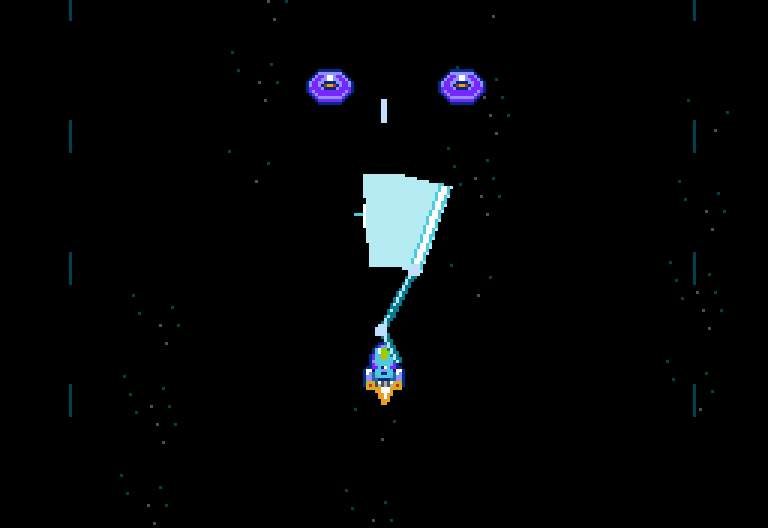
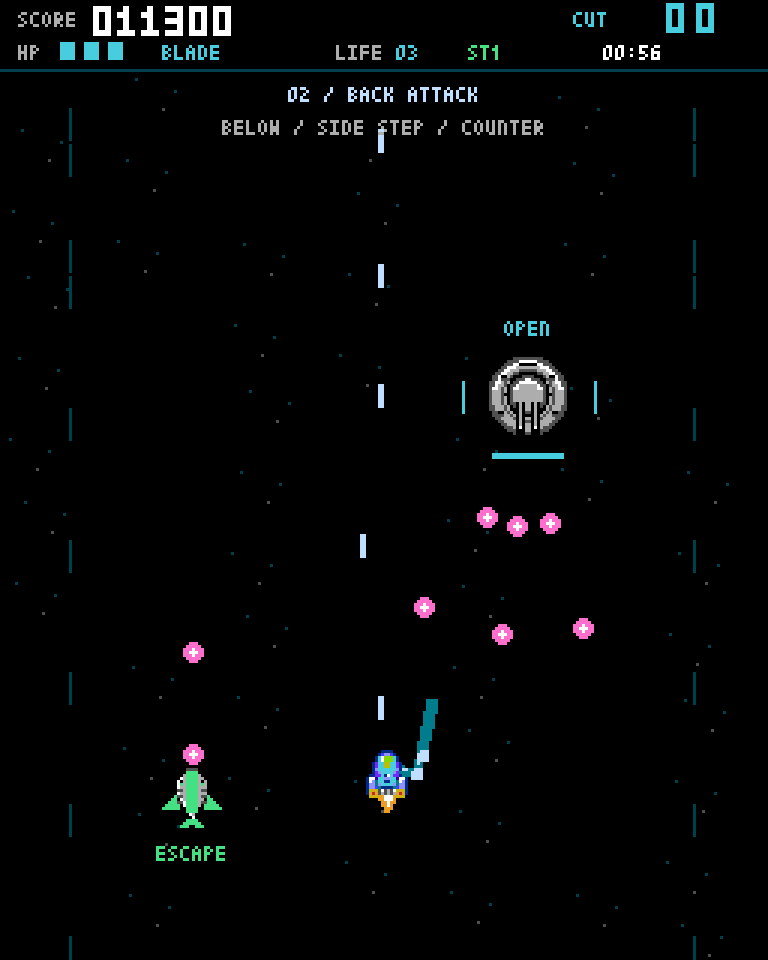
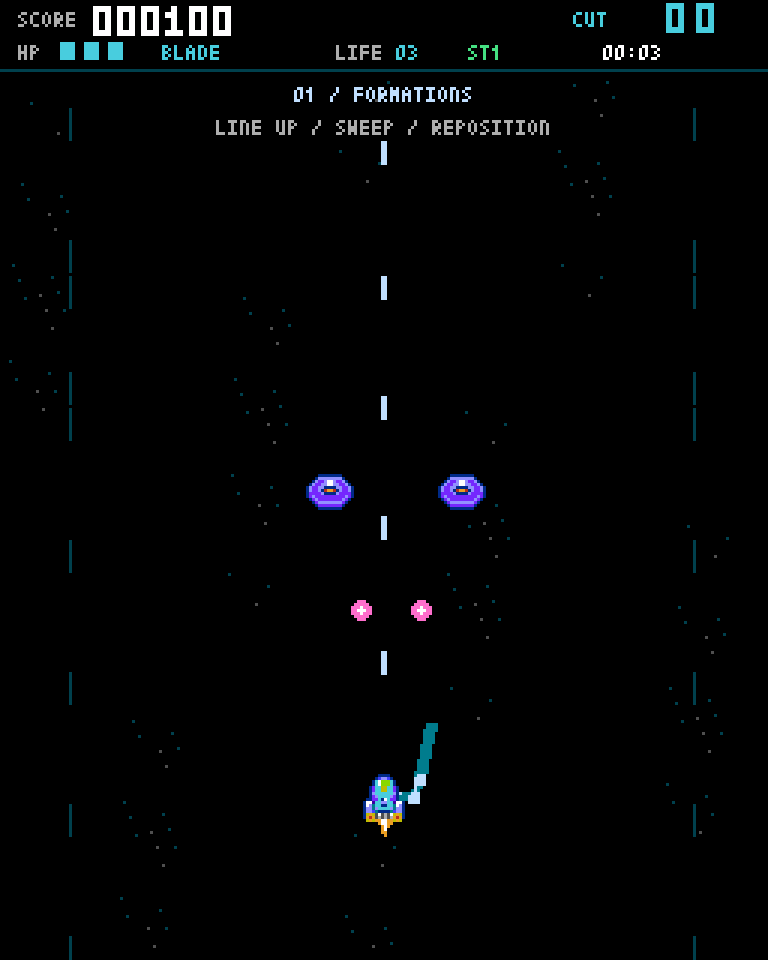
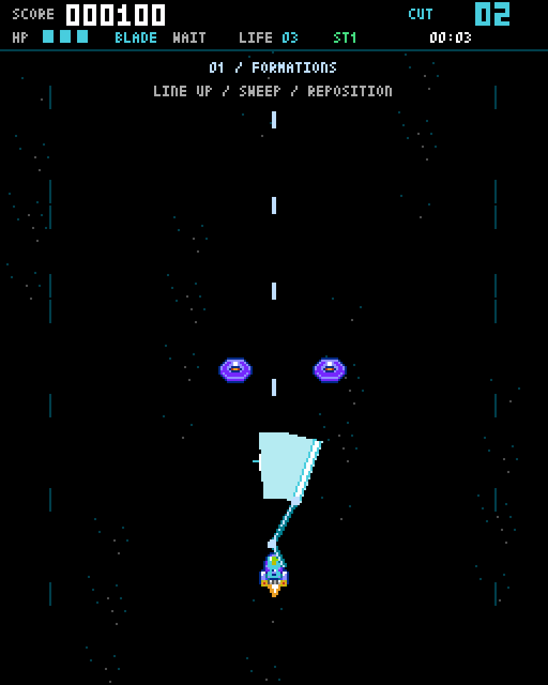
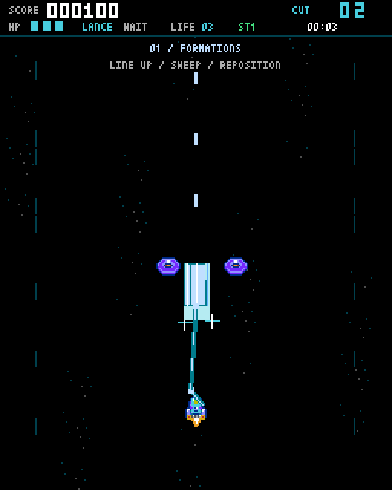
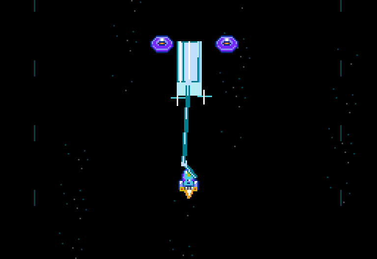
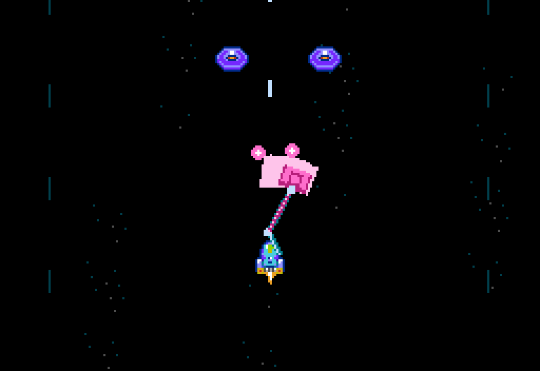
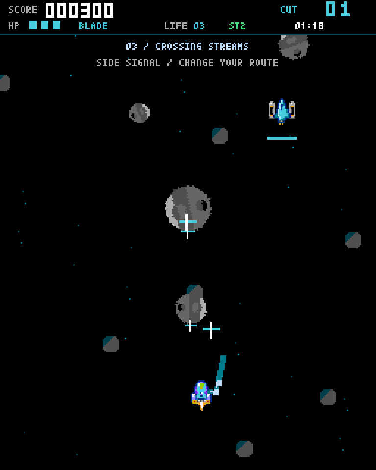
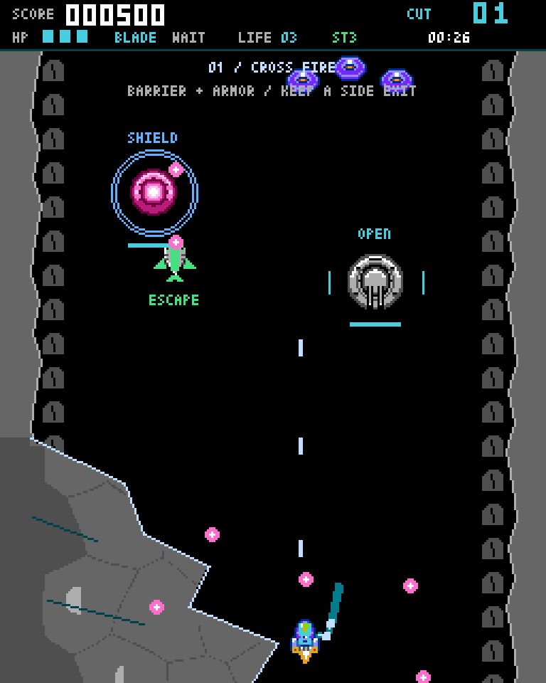

ブレード
前方を広く薙ぎ払う標準武器。敵の編隊をまとめて斬り、敵弾の中に突破口を作る。
CLOSE QUARTERS SHOOTING
弾を斬れ。その先へ、踏み込め。
左手で避け、右手で突破口を作る近接シューティング。
PC・スマホ対応 ／ GKD Pixel 2版あり

3 STAGES船団を救うミッション
3 WEAPONS斬り方を選ぶ
MOVE + CUT移動しながら近接攻撃
WEB / GKD PIXEL 2 v0.18.201 / STORY
宇宙の辺境から、
囚われた船団のもとへ。
星歴0149年。頑強なマニピュレータ「カンフーアーム」を備えた宇宙船、デクストルシップの登場により、人類は宇宙開拓時代を迎えていた。しかし、資源を求める開拓者たちの背後には、宇宙海賊の脅威が迫っていた。
宇宙の辺境、第7宙域。凄腕のバウンティハンター・ブレイドのもとに、宇宙海賊ステラースカルに拉致された採掘船団の救出依頼が届く。
最新型デクストルシップ「アストレイヤー」を駆り、敵艦隊と危険なアステロイド帯を突破せよ。囚われた船団を救う、超接近戦が始まる。
02 / CONTROLS
左手で移動。右手で攻撃。
左右の指を同時に使えます。

左側から触れた指を動かすと、自機が移動します。触れた位置へ飛ぶことはありません。

ブレード／アックスは、右側で左右どちらかへ素早く払います。左手で移動しながら、右手で攻撃できます。

ランスは、右側で上下どちらかへ素早く払います。攻撃は自機の前方へ出ます。
実ビルドの画面に説明用の矢印・注釈を重ねています。ミントの矢印は指の動き、オレンジの線は自機と刃の位置です。
| 環境 | 移動 | 近接攻撃 |
|---|---|---|
| PC・キーボード | 十字キー | Z |
| GKD Pixel 2 | 十字キー | A |
GKD版はSELECTで終了します。
03 / WEAPONS
間合いと斬り方で、
突破の形が変わる。

前方を広く薙ぎ払う標準武器。敵の編隊をまとめて斬り、敵弾の中に突破口を作る。

長いリーチで正面を貫く武器。離れた敵を狙える一方、左右への攻撃範囲は狭い。

深く踏み込み、重い一撃を叩き込む高威力武器。リーチが短く、次の攻撃まで時間がかかる。
アイテムを取得すると、近接武器を変更できます。切り替わる絵柄を見て、狙った武器を手に入れましょう。
04 / STAGES
艦隊を抜け、岩塊を越え、
敵本拠地の奥へ。
宇宙海賊艦隊との闘い。編隊、突進、背後からの奇襲を突破し、立ちはだかる巨大戦艦を撃破せよ。

無数の岩塊と船の残骸が漂うアステロイド帯。迫る岩を斬り、避け、追尾ミサイルをかわしながら敵本拠地へ進め。

巨大小惑星の内部に築かれた敵本拠地。不規則な岩壁と残存部隊の猛攻を突破し、囚われた船団を救い出せ。
05 / CHARACTERS & WORLD
PLAY NOW
起動後、ゲーム画面をタップして
「開始」を押してください。
インストール不要です。ブラウザで遊べます。ゲーム専用画面を使うと、画面を広く取れます。
読み込み後にゲーム画面をタップし、「開始」を押してください。初回の読み込みにはネット接続が必要です。うまく動かない場合は、ゲーム専用画面を開き直してください。
全3面を進む「通しプレイ」と、選んだ面だけを遊ぶ「ステージセレクト」があります。